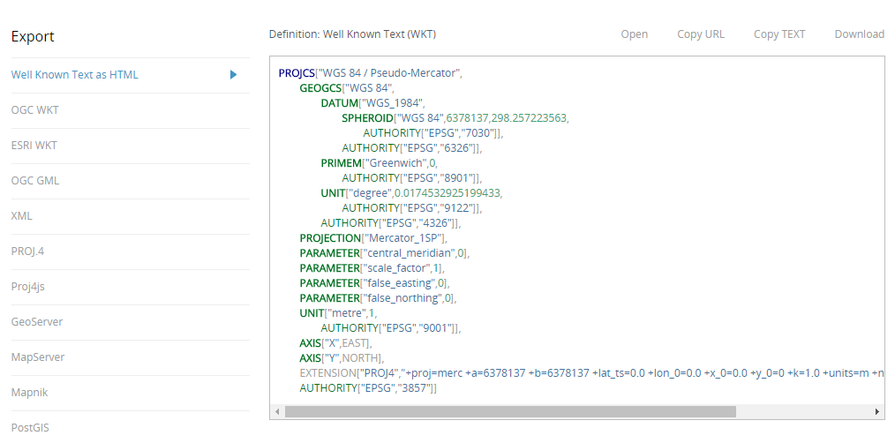

采取互联网通用的交换格式，遵循对应的标准直接接入，无需其他转换操作。
全部采取GeoJSON的格式作为中间转换格式，考虑拓扑关系使用TopoJSON


示例
GeoJSON示例说明 Point示例 Line示例 Polygon示例 MultiPoint示例 MultiLine示例 MultiPolygon示例 集合示例目前只支持点类型的GeoJSON格式进行流式渲染
消息接收ws://192.168.91.121:9382/websocket/streamdemo/subscribe
消息发送ws://192.168.91.121:9382/websocket/streamdemo/broadcast
收发内容下图所示中的GeoPoint
示例
IGServer-X示例说明

支持所有的EPSG的格式
